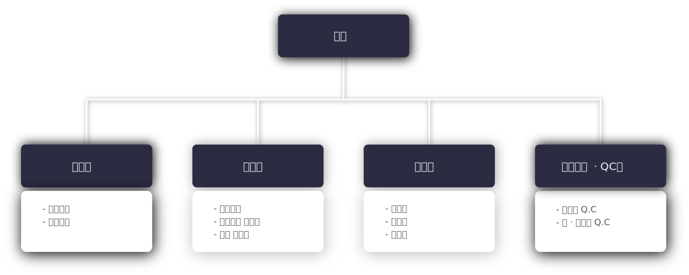

회사 소개
회사 소개 및 대표 인사말
안녕하십니까,
조윤코스텍 대표 김성환입니다.
조윤코스텍 홈페이지를 찾아주셔서 감사합니다.
저희 조윤코스텍은 2011년 창업하여 생활용품 및 화장품 견본 파우치 충진을 전문으로 운영하여 왔으며, 2017년 5월 현재 공장으로 이전하여 제조 믹서 0.5톤, 1.5톤과 튜브기, 시트마스크, 소형 충진기 형상 및 롤파우치 충진기 등 다수의 설비를 설치하여, OEM, ODM 제품을 생산하는 회사로 발돋움했습니다.
30여년간 화장품 회사에서 근무한 경험을 토대로, 신속하고 정확한 품질관리와 원가경쟁력으로 고객사에 다가서는 조윤코스텍이 되도록 최선의 노력을 다하여 발전해나가겠습니다. 감사합니다.
대표 김성환
조직도
회사 연혁
| 2011.02.15 | 회사 설립 |
| 2011.03.17 | 공장 등록 |
| 2012.09.05 | 화장품 제조업 등록 |
| 2015.02.02 | 화장품 제조판매업 등록 |
| 2017.05.12 | 현 소재지 인수 폐수배출시설설치허가 / 소재지 변경신고 완료 (인천광역시) |
| 2017.05 | 자체 품질 검사 및 제조 관리 시작 |
| 2019.07.23 | 연구 전담 부서 설립 |
수상경력
| 2012.07 | 인천광역시장 |
| 2019.06 | 인천 남동구청장 |